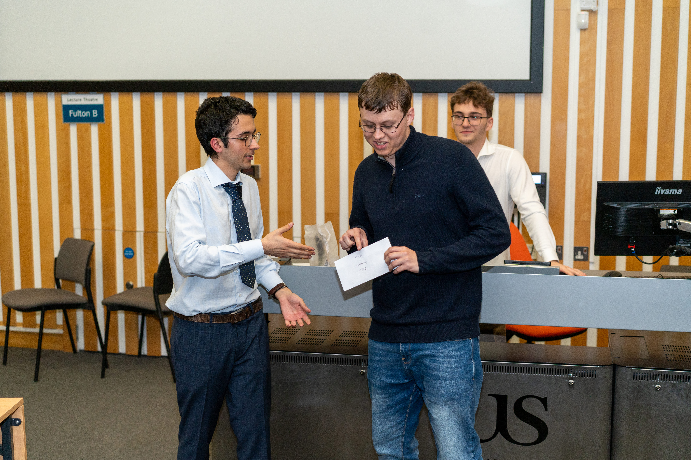
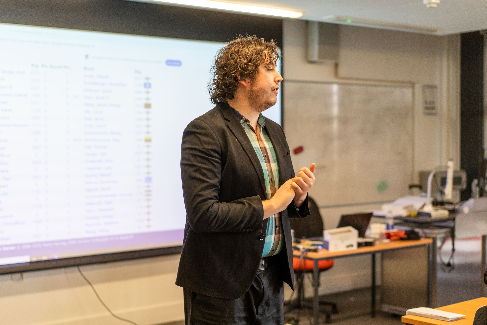
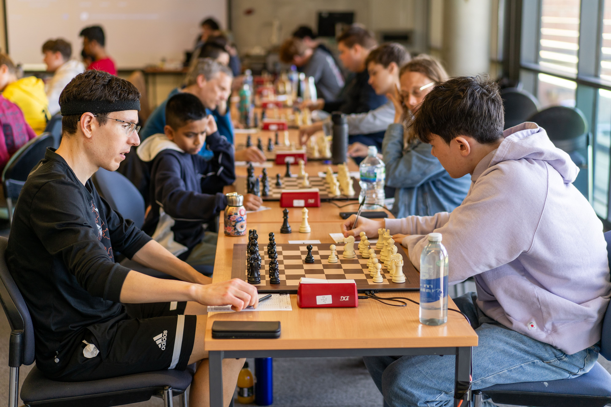
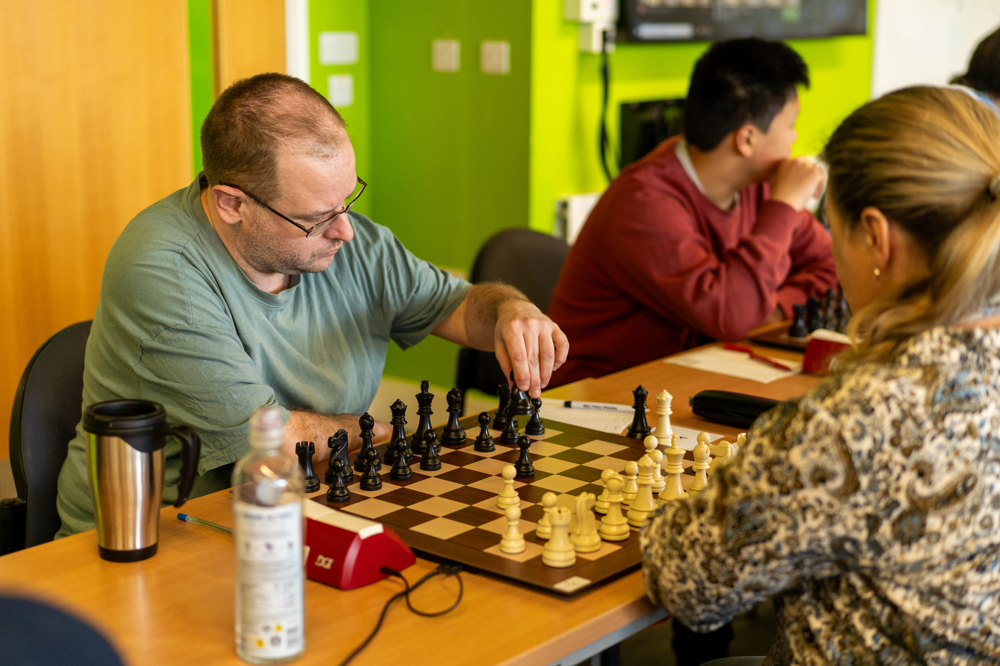

Sussex University
Compete, learn, and socialise. Weekly club nights, socials, and open tournaments for university and non-university students — all welcome, all abilities.
About the Society
Regular sessions for casual play and competitive practice. Drop in any week.
Internal and external competitions throughout the year, including our 5th iteration of our tournament!
We run regular social events throughout the year.
Next Event
Gallery




What People Say
The first four editions of the Sussex University Chess Congress have truly been a rollercoaster, both for me personally and for the event itself. Across these four tournaments, I have experienced highs and lows on the chessboard, while also witnessing the congress develop into one of the most exciting events on the English chess calendar.
My journey began in 2024 at the inaugural Sussex University Chess Congress. As a competitor, I was pleased to score a solid 3/5, a respectable result in a strong field. One of the highlights of the tournament was the opportunity to face International Master Peter Large. Although I ultimately lost after a hard-fought battle, it was a valuable experience and a memorable game against a highly accomplished player. The first congress set a strong foundation and demonstrated the organisers' ambition to create a high-quality event.
The second edition saw my score drop by half a point, but the results only told part of the story. As the congress grew in popularity, the strength of the opposition increased significantly. The stronger field provided an excellent challenge and reflected the tournament's growing reputation within the chess community. It was encouraging to see more players choosing to attend, helping to establish the event as a serious fixture on the calendar.
By the third congress, the growth of the event was impossible to ignore. Entry numbers had skyrocketed, and the organisers had taken the ambitious step of including an IM norm tournament alongside the main congress. The open section also featured several strong titled players, further raising the standard of competition. Personally, this edition was extremely difficult. I managed only two draws while losing my remaining games, resulting in a painful 99-point drop in my FIDE rating. Despite the disappointing score, I thoroughly enjoyed the atmosphere throughout the event. The opportunity to compete against strong opposition and to witness elite international norm events being integrated into the congress made it a fascinating and enjoyable experience. The tournament's continued development was far more significant than my individual result.
The fourth edition was undoubtedly my favourite. Once again, I scored a solid 3/5, but this achievement felt even more satisfying given the strength of the field, which was packed with titled players. The tournament atmosphere was outstanding, and there was plenty happening beyond the main event. A particular highlight was the exhibition match between Sohum Lohia and Sergey Korshunov, which was played alongside the congress and attracted considerable interest. It was a privilege to watch such high-level chess up close.
Another memorable moment came during the first edition of the congress blitz tournament, where I had the opportunity to face Sergey Korshunov myself. Despite my best efforts, the FIDE Master outclassed me, demonstrating exactly why he is such a strong player. His victory capped off a fantastic event for him, as he scored a perfect 9/9 in the blitz tournament and also secured a convincing win in the exhibition match.
Press & Reports
Match reports and write-ups from previous Sussex University congresses.
Community
Chess at Sussex is about more than just the games, we run events that bring the whole community together.
Past Event · 1st-4th Congress
An informal panel discussion for parents of junior players, covering how to support a young chess player's development, ECF grading, and the junior chess pathway in the UK.
Past Event · 4th Congress, 2025
A special exhibition match raising funds for charity, featuring notable local players.
Support Us →